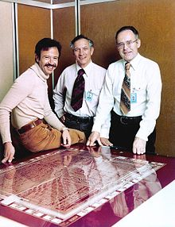
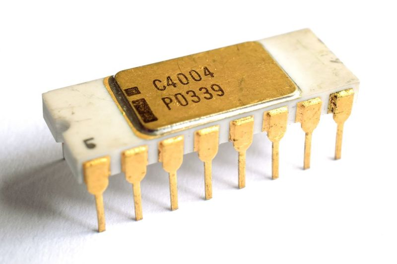

Intel byl založen v Mountain View, Kalifornie, v roce 1968 Gordonem E. Moorem ("Mooreova právnická" sláva), chemikem a Robertem Noycem, fyzikem a spoluautorem integrovaného obvodu. Arthur Rock (investor a rizikový kapitalista) jim pomohl najít investory, zatímco Max Palevsky byl na palubě od raného stádia. Moore a Noyce opustili Fairchild Semiconductor, aby našli Intel. Rock nebyl zaměstnanec, ale byl investorem a předsedou představenstva. Celková počáteční investice do společnosti Intel činila konvertibilní dluhopisy v hodnotě 2,5 milionu dolarů a Rock od Rocku. Jen o 2 roky později se společnost Intel stala veřejnou společností prostřednictvím počáteční veřejné nabídky (IPO), která zvýšila 6,8 milionu dolarů (23,50 USD za akcii). Třetím zaměstnancem společnosti Intel byl chemický inženýr Andy Grove, který později podnik provozoval ve většině osmdesátých let a ve vysokém růstu devadesátých let.
V rozhodování o jménu, Moore a Noyce rychle odmítl “Moore Noyce”, blízko homophone pro “více hluku” - špatně-vhodný název pro elektronickou společnost, protože hluk v elektronice je obvykle nežádoucí a typicky spojený se špatným rušením. Místo toho založili společnost jako NM Electronics 18. července 1968, ale ke konci měsíce změnili název na Intel, což znamenalo Integrovanou elektroniku. Vzhledem k tomu, že "Intel" již byl ochrannou známkou hotelového řetězce Intelco, museli si zakoupit práva na toto jméno.

Ranná historie
Na jeho založení, Intel byl rozlišován jeho schopností dělat logické obvody používat polovodičová zařízení. Cílem zakladatelů byl trh s polovodičovou pamětí. Jeho prvním produktem, rychlým vstupem na malý, vysokorychlostní paměťový trh v roce 1969, byl 3101 bipolární 64-bitový statický paměť s náhodným přístupem (SRAM), který byl téměř dvakrát rychlejší než dřívější implementace Schottkyho diody od společnosti Fairchild. a Laboratoř elektrotechniky v Tsukuba, Japonsko. Ve stejném roce, Intel také produkoval 3301 Schottky bipolární 1024-bitová čtecí paměť (ROM) a první komerční metal-oxid-polovodičové pole-efekt tranzistor (MOSFET) silikonová brána SRAM čip, 256-bit 1101. Zatímco 1101 byl významný pokrok, jeho komplexní statická buněčná struktura dělala to příliš pomalý a nákladný pro paměti sálových počítačů. Tyto tři problémy vyřešily tři tranzistorové články implementované v první komerčně dostupné dynamické paměti s náhodným přístupem (DRAM), 1103 vydané v roce 1970. 1103 byl bestseller polovodičový paměťový čip na světě 1972, jak to nahradilo jádrovou paměť v mnoha aplikacích. Obchod společnosti Intel vzrostl během sedmdesátých let, kdy rozšířil a zdokonalil své výrobní procesy a vyrobil širší škálu produktů, kterým stále dominují různá paměťová zařízení.
Federico Faggin, designér Intel 4004
Zatímco Intel v roce 1971 vytvořil první komerčně dostupný mikroprocesor (Intel 4004) a jeden z prvních mikropočítačů v roce 1972, na počátku osmdesátých let jeho podnikání dominovaly dynamické paměťové čipy s náhodným přístupem. Zvýšená konkurence japonských výrobců polovodičů však do roku 1983 výrazně snížila ziskovost tohoto trhu. Rostoucí úspěch osobního počítače IBM, založený na mikroprocesoru Intel, byl jedním z faktorů, které přesvědčily Gordona Moora (generálního ředitele od roku 1975), aby přesunul zaměření společnosti na mikroprocesory a změnil základní aspekty tohoto obchodního modelu. Mooreovo rozhodnutí, že jediný zdroj 386 čipů společnosti Intel, hrálo v pokračujícím úspěchu společnosti. Vývoj mikroprocesoru společností Intel (1971): Mikroprocesor představoval významný pokrok v technologii integrovaných obvodů. Mikroprocesor miniaturizoval centrální procesorovou jednotku počítače, což umožnilo malým strojům provádět výpočty, které v minulosti mohly dělat pouze velmi velké stroje. Značná technologická inovace byla potřebována dříve, než se mikroprocesor mohl skutečně stát základem toho, co bylo poprvé známo jako "mini počítač" a pak známý jako "osobní počítač".
Ke konci osmdesátých let, kdy se společnost Intel a její konkurenti na trhu s mikroprocesorem, kteří jsou dodavateli IBM a IBM v rámci rychle rostoucího trhu s osobními počítači, vzkvétala, se pustila do desetiletého období bezprecedentního růstu jako primární (a nejziskovější) dodavatel hardwaru. počítačového průmyslu, který je součástí vítězné kombinace „Wintel“. Moore předal Andy Grove v roce 1987. Zahájením své marketingové kampaně Intel Inside v roce 1991 byl Intel schopen spojit loajalitu se zákazníky s výběrem spotřebitelů, takže do konce devadesátých let se jeho řada procesorů Pentium stala názvem domácnosti.

Dominance v roce 2000
Po roce 2000 se zpomalil růst poptávky po špičkových mikroprocesorech. Konkurenti, zejména AMD (největší konkurent společnosti Intel na svém primárním trhu architektury x86), získali významný podíl na trhu, zpočátku v procesorech s nízkým a středním rozsahem, ale nakonec v celém sortimentu, a dominantní postavení společnosti Intel na jejím hlavním trhu bylo výrazně sníženo. Na počátku roku 2000 se pak generální ředitel Craig Barrett pokusil diverzifikovat obchodní aktivity společnosti mimo polovodiče, ale jen málo z těchto aktivit bylo nakonec úspěšných.